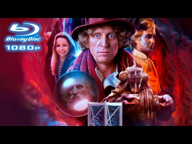
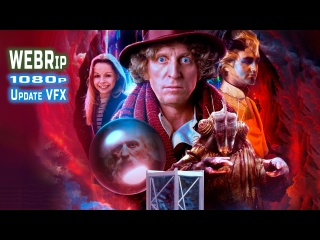
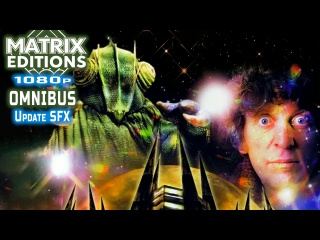
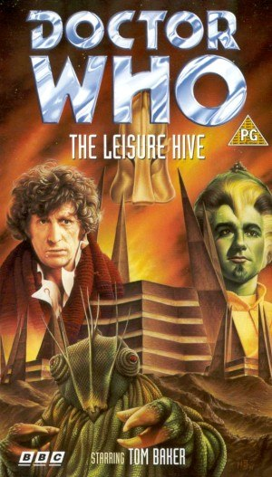
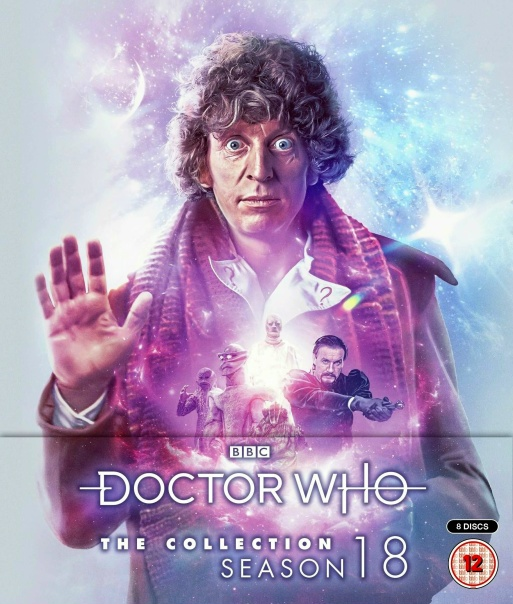
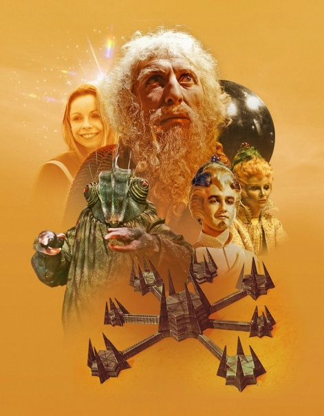
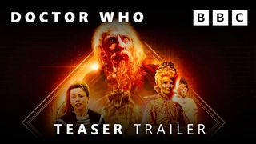

The Leisure Hive
Дата выхода: 30 августа - 20 сентября 1980
Формат: 4 эпизода по 25 мин.
 |  камео |
| Варианты озвучек: | * DVO PARUSSKI |
|---|---|
| Ссылки для скачивания: |
Субтитры: Русские и Английские |  |
|---|---|
с фанатским обновлением визуальных эффектов (cunningmunki) Субтитры: Русские и Английские |  |
с обновлением визуальных эффектов (cunningmunki) Субтитры: отсутствуют |  |
The Leisure Hive
Дата выхода: 30 августа - 20 сентября 1980
Формат: 4 эпизода по 25 мин.
| камео |
| Варианты озвучек: | * DVO PARUSSKI |
|---|---|
| Ссылки для скачивания: |
Доктор и Романа прибывают на Арголис — планету, пережившую ядерную войну с фоамами и превратившуюся в радиоактивную пустошь. Выжившие арголийцы построили Улей Отдыха — развлекательный комплекс для туристов с играми, забавами и экспериментами по регенерации тканей, на которые делают ставку, чтобы продлить жизнь своему угасающему народу. За фасадом курорта скрываются интриги, шпионаж и опыты с тахионами — частицами, способными перемещать материю во времени. Дебют Джона Нейтана-Тёрнера в роли продюсера: сериал резко меняет тон — меньше юмора, больше мрачной атмосферности, новая музыка Питера Хауэлла, новый логотип и новый визуальный стиль, задавший направление на все последующие годы.
 VHS - январь 1997 |  DVD - 5 июля 2004 |  Blu-ray - 18 марта 2019 * Версия в нашей группе |
|---|


